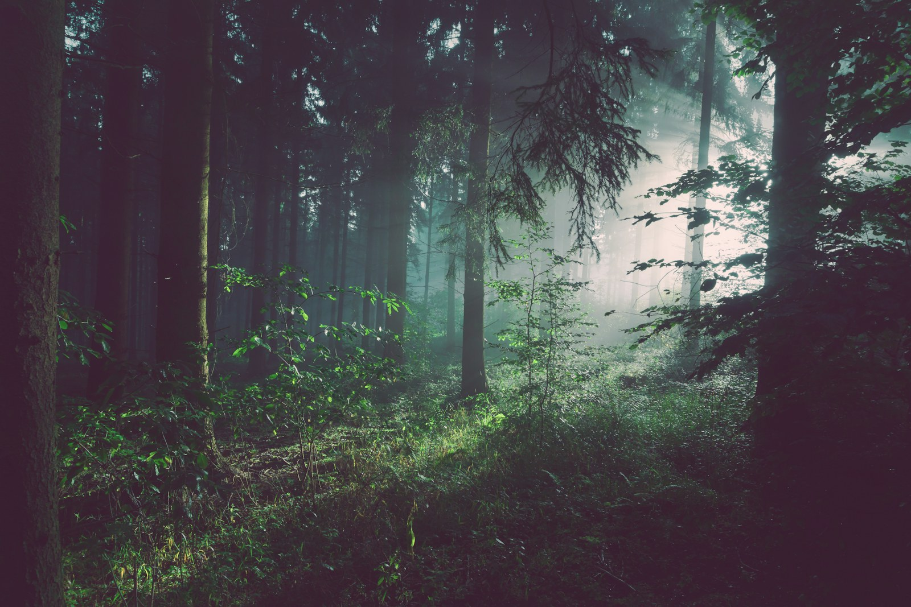

O avanço da cidade
Expansões sem planejamento ocupam áreas naturais e fragmentam habitats.
Buscar reportagens no G1Reportagens e dados ajudam a entender o que muda quando o limite entre cidade e floresta desaparece.

Expansões sem planejamento ocupam áreas naturais e fragmentam habitats.
Buscar reportagens no G1A perda de vegetação pressiona o solo, altera a drenagem e intensifica o calor urbano.
Buscar reportagens no G1Proteger mananciais e recuperar áreas verdes torna as cidades mais resilientes.
Buscar reportagens no G1